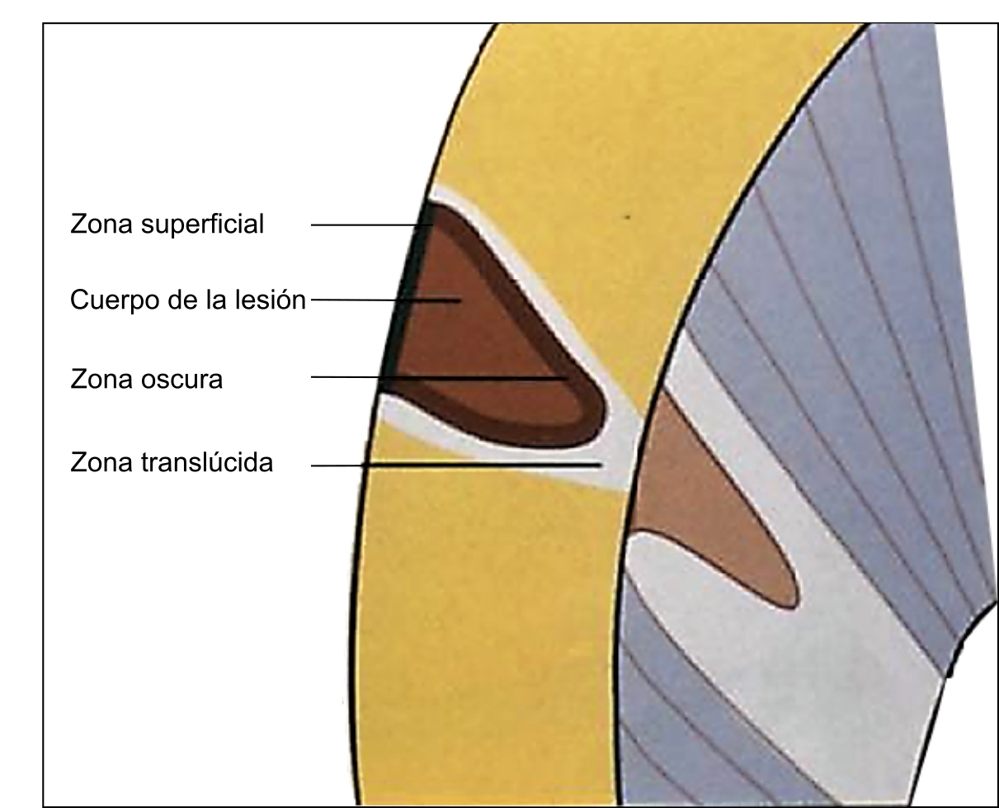

Caries en Esmalte
Cuando se observa al microscopio un corte basal delgado de una lesión precoz de caries (previa a la cavitación), pueden identificarse cuatro zonas:
- Zona superficial relativamente intacta: esta zona permanece inalterable en relación al resto de las zonas, actúa como gradiente de difusión que permite que minerales como el calcio, el fosfato y el fluoruro entren y salgan del esmalte.
- Cuerpo de la lesión: es la zona más amplia de toda la lesión inicial, donde se produce la principal desmineralización. Además, existe un incremento en la cantidad de materia orgánica y agua, debido a la entrada de bacterias y saliva.
- Zona oscura: es aquella que se encuentra presente en el 90 al 95% de las lesiones. Esta zona es consecuencia del proceso de desmineralización y remineralización. Se observa oscura, debido a que al ser la quinolina incapaz de penetrar dentro de los poros muy pequeños que están en esta zona no transmite la luz polarizada.
- Zona translucida: es el frente de avance de la lesión del esmalte. Su apariencia translucida se basa en el hecho que la quinolina penetra fácilmente en los poros aumentados por la pérdida mineral y como la quinolina tiene el mismo índice de refracción de los cristales, el resultado será una zona menos estructurada y de apariencia translucida.
